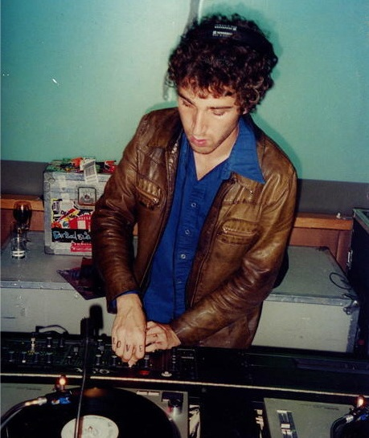
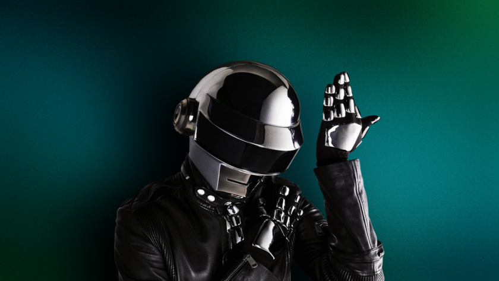

Thomas Bangalter
Bangalter was born on 3 of January 1975 in Paris, France. He began playing the piano at the age of six. He has stated that his parents were strict in keeping up his practice, for which he later thanked them. His father, Daniel Vangarde, was a songwriter and producer for performers such as the Gibson Brothers, Ottawan, and Sheila B. Devotion. As expressed by Bangalter, "I never had any intention to do what my father was doing."[8] Bangalter's father is Jewish, but the family did not consider themselves religious.
- 1987–2000: Early years and Daft Punk formation
- 2000–2020: Further Daft Punk and solo productions
- 2021–present: Daft Punk disbandment and current solo projects
- Personal life
Bangalter met Guy-Manuel de Homem-Christo while attending the Lycée Carnot school in 1987. They discovered their mutual fascination with films and music of the 1960s and 1970s, "very basic cult teenager things, from Easy Rider to the Velvet Underground." They and Laurent Brancowitz eventually joined to form an indie rock trio called Darlin', in which Bangalter performed bass guitar. Bangalter felt that "It was still maybe more a teenage thing at that time. It's like, you know, everybody wants to be in a band." A negative review from Melody Maker magazine referred to their music as "a daft punky thrash", which inspired Bangalter and de Homem-Christo's new band name. Shortly before reaching the age of 18, Daft Punk grew interested in electronic music, which led Brancowitz to leave the group in pursuit of efforts with fellow Parisian band Phoenix. In 1993 Bangalter presented a demo of Daft Punk material to Stuart Macmillan of Slam that led to their first single "The New Wave". Daniel Vangarde provided valuable advice for the duo. "He helped us by presenting to us what the situation was with the record industry and how it worked. Knowing that, we made certain choices in order to achieve what we wanted." In 1996, Bangalter was in a group known as Da Mongoloids, consisting of Armand Van Helden, Bangalter, and Junior Sanchez, under the record label Strictly Rhythm. They created the song Spark da Meth, which was their only song. Vangarde was thanked for his efforts in the liner notes of Homework. The title of the album is partially attributed to the fact that Homework was recorded in Bangalter's bedroom. As he remarked, "I had to move the bed into another room to make space for the gear." In the years following the 1997 release, Bangalter focused on his own record label, Roulé ("rolled" in French). The label released singles by Romanthony, Roy Davis Jr., and Bangalter's own solo material among others. Bangalter's solo works were released on two vinyl-only EPs titled Trax on da Rocks in 1995 and 1998 respectively. The songs "Outrun", "Extra Dry" and "Turbo" from the EPs later appeared in the video game Midnight Club II. The track "On da Rocks" was featured in a "Da Funk" behind-the-scenes video included with D.A.F.T.: A Story About Dogs, Androids, Firemen and Tomatoes. Bangalter collaborated with Alan Braxe and Benjamin Diamond and in 1998 released the club hit "Music Sounds Better with You" under the name Stardust. Just as for Homework, the single was recorded in Bangalter's home studio. Around the same time of "Music Sounds Better with You", Bangalter co-produced Bob Sinclar's second single titled "Gym Tonic". The single caused a minor dispute as it contained samples from a Jane Fonda workout tape, which led Fonda herself to refuse permission for the single to be released officially. A different act called Spacedust released a re-recorded version of the track, titled "Gym and Tonic" under East West Records to wider commercial success. "Gym and Tonic" became a number one single in the United Kingdom shortly after "Music Sounds Better with You" had peaked at number two in the same chart. During 1998, Bangalter and de Homem-Christo collaborated with Romanthony in what would become the first of the Discovery sessions. One of tracks produced, "One More Time" became Daft Punk's most successful single in 2000. Bangalter also performed on a Yamaha CS-60 synthesizer on the track "Embuscade" in Phoenix's debut album United, which was released the same year. He also teamed up with DJ Falcon under the name Together to release their eponymous 2000 single.
BackBangalter produced the score to the film Irréversible, released in 2002. A soundtrack album of the same name was later released featuring Bangalter's tracks as well as the works by Gustav Mahler, Étienne Daho and Beethoven used in the film. North American pressings of the album feature only the Bangalter tracks. Three of the tracks from the Trax on da Rocks EPs were released on the album: "Outrun", "Ventura" and "Extra Dry". 2002 also saw the release of the Bangalter produced track "113 Fout La Merde" for French hip hop group 113. Bangalter can be seen dancing in the music video, wearing his Daft Punk helmet. Together released the single "So Much Love to Give" in 2003. The Eric Prydz track "Call on Me" based on Steve Winwood's song "Valerie" was mistakenly thought to be a Together release. According to DJ Falcon, Together had previously sampled "Valerie" similarly in their solo mixes prior to Prydz's track, but they had no intention to release it as a single. In 2005 Daft Punk released their third studio album, Human After All. As de Homem-Christo noted, "Every album we've done is tightly linked with our lives. [...] The internal, personal stuff Thomas went through during Human After All made it closer to where he was at the time". Bangalter was the sound effects director for the 2009 film Enter the Void, his second work with filmmaker Gaspar Noé following Irréversible. He initially had been approached by Noé to compose the soundtrack of Enter the Void, but Bangalter was preoccupied with work on the Tron: Legacy score at the time. Bangalter instead provided various clips of drones and ambiance for the film to be accompanied by music by other artists from the 1960s and 70s. He is billed in the credits as sound effects director, and the film features his track "Désaccords" originally composed for Irréversible. In 2011, Bangalter directed and choreographed a short film featuring Élodie Bouchez that served as an advertisement for the fashion line Co. A year later, Bangalter scored the short film First Point directed by Richard Phillips and starring Lindsay Lohan. In 2013 Bangalter and Homem-Christo released their fourth studio album, Random Access Memories. One of the collaborators on the album, Giorgio Moroder, recalled that the duo had a perfectionist approach; he had recorded his vocal contribution on multiple microphones despite the fact that only Bangalter would notice the difference. In 2016, Daft Punk produced and co-wrote two songs from The Weeknd's third studio album, "Starboy" and "I Feel It Coming," the former of which became the duo's first number one hit on the Billboard Hot 100.[24] In June 2017, Daft Punk also produced and co-wrote a single for the Australian electropop band Parcels. The single would be Daft Punk's final released production. Bangalter was one of the producers on Arcade Fire's album Everything Now, which released July 2017. In 2018 he worked with Noé again, providing two tracks for the film Climax, including the previously unreleased “Sangria.” Later he co-produced and co-wrote two tracks from Matthieu Chedid's 2019 album Lettre infinie, while also mastering the album. In 2018, Alan Braxe and Benjamin Diamond revealed that they and Bangalter returned to the studio to work on a remastered version of "Music Sounds Better with You" for the song's twentieth anniversary. The remaster released on 28 June 2019.
Back On 22 February 2021, Daft Punk released a video announcing their breakup. Upon request for an official statement regarding the disbandment, Bangalter released a handwritten note quoting the Daft Punk song "Touch" alongside a clip of the 1936 film Modern Times, in which one character tells another to smile before they both walk away into the distance. Friend and collaborator Todd Edwards clarified that Bangalter and Homem-Christo remain active separately, and that Bangalter in particular was looking into potential solo projects. In July 2021, it was announced that Bangalter's first major solo project following Daft Punk's split would be providing the score to a French ballet titled Mythologies, presented by Ballet Preljocaj. The 90-minute ballet, premiering in July 2022, features direction and choreography by Angelin Preljocaj and original music by Bangalter, with musical direction by Romain Dumas. The ballet premiered at the Grand-Théâtre de Bordeaux, with the show having plans to tour. In March 2022, the film En Corps, directed by Cédric Klapisch, was released featuring a score by Hofesh Schechter with a brief contribution from Bangalter.
BackBangalter is married to French actress Élodie Bouchez, with whom he has two sons named Tara-Jay (born 2002) and Roxan (born 2008). In 2004, they took up residence in Beverly Hills, California, due to Bouchez's Hollywood career and Bangalter's own interests in filmmaking. They currently live in Paris, while Daft Punk's creative offices remained in Los Angeles. It was reported that Bangalter had quit DJing in clubs due to developing tinnitus in 2002, saying, "I've given up because I want to protect my ears." Orde Meikle of Slam later stated that Bangalter had sufficiently recovered from the condition, stating that "he had a bit of a scare and thought he'd damaged his ear and had to take obviously reasonably drastic steps to see how bad the damage was".
Back